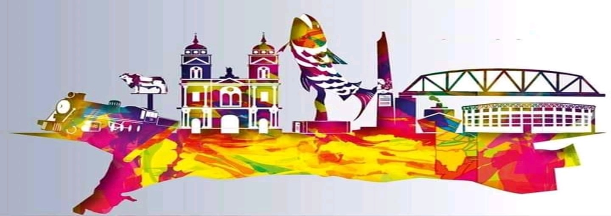

- 

La pesca artesanal es una actividad tradicional y de
subsistencia para muchas comunidades ribereñas.
El río Magdalena provee diversas especies de peces,
siendo una fuente importante de alimento y,
en menor medida, de ingresos.

La agricultura es un pilar económico importante,
destacándose el cultivo de cacao, plátano, yuca, maíz
y diversas frutas tropicales. Los suelos fértiles de la
vega del río Magdalena son propicios para estas
actividades.
La región ha sido históricamente golpeada por el
conflicto armado interno de Colombia.
Muchas comunidades y su gente han sufrido
desplazamientos forzados, homicidios, despojo de tierras,
masacres, secuestros y otras violaciones de derechos humanos. Aún hoy, el trabajo por la reparación y la construcción de paz es una tarea fundamental en la zona para ayudar esta población vulnerable.
La región cuenta con infraestructura férrea que, junto con
las vías terrestres y la navegabilidad del río Magdalena,
la convierte en un nudo estratégico de transporte y
conexión entre diferentes regiones del país.
El tren ha sido clave para el desarrollo económico,
facilitando el comercio de productos agropecuarios
y otros bienes.
La minería, especialmente la ilegal, representa
una amenaza ambiental significativa en el
Magdalena Medio Caldense. La extracción ilícita de oro
ha causado deforestación, contaminación con mercurio
y alteraciones en la dinámica fluvial, afectando la
faja forestal protectora y la biodiversidad local.
Además, la minería ilegal está asociada a la financiación
de grupos armados ilegales, lo que agrava los problemas
sociales y de seguridad en la región.
La región es hábitat de una alta diversidad de mamíferos, con registros de al menos 49 especies en áreas de bosque seco, incluyendo especies amenazadas como la nutria neotropical, el mono nocturno y el tití cabeciblanco. Hay muchos tipos especies: Aves, Mamíferos, Reptiles, Anfibios, peces y insectos

La ganadería es la principal actividad agropecuaria,
destacándose la producción de carne bajo sistemas
extensivos y extensivos mejorados.
Recientemente, la ganadería de doble propósito
(carne y leche) ha ido ganando terreno. La región es
estratégica para la comercialización de carne y leche,
gracias a su ubicación y vías de comunicación que
la conectan con los principales mercados del país.
El turismo en el Magdalena Medio Caldense se encuentra
en desarrollo. Los principales atractivos son el río
Magdalena (para actividades náuticas y pesca deportiva),
la observación de aves debido a la riqueza de su fauna,
y algunos balnearios naturales. El turismo histórico y
cultural relacionado con el patrimonio ferroviario
también tiene potencial.
El Magdalena Medio Caldense alberga una gran diversidad de flora, con cerca de 2.000 especies de plantas vasculares, de las cuales aproximadamente el 7% son endémicas de Colombia. En la región se encuentran árboles de gran valor ecológico y económico como cabo de hacha, cedrillo, lechero, sapán, abarco, ámbar, caracolí, ceiba amarilla, caoba, sangretoro y guayacán amarillo.